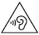

在這份指南中，除了包含 Pixel 6a 盒內《安全與保固》書面手冊提及的基本安全準則，還提供其他有關 Pixel 6a 的安全、法規與保固資訊。
如要查閱安全與法規資訊，請造訪 g.co/pixel/safety。您也可以在裝置上依序輕觸「設定」 「關於手機」
「關於手機」 「安全性和法規手冊」。
「安全性和法規手冊」。
如要查看您的國家/地區適用的購物保固資訊 (包括保固申請方式)，請造訪 g.co/pixel/warranty。
如何查閱裝置的電子法規標籤和電磁波能量比吸收率 (SAR) 值：
在裝置上依序輕觸「設定」 「關於手機」
「關於手機」 「法規標籤」。
「法規標籤」。
如要查閱完整的線上說明，請造訪 g.co/pixel/help。
| 警告：使用裝置前，請詳閱以下健康與安全性資訊，降低人身傷害、身體不適、財物毀損 (包括 Pixel 6a 配件或任何連接的裝置受損) 和其他潛在危害的風險。 |
請謹慎使用您的手機。如拆解、摔落、折彎、燒灼、碾壓或刺穿裝置，可能會造成手機或電池損壞。請勿使用外殼損壞、螢幕破裂或有其他破損情況的手機。使用損壞的手機可能會發生過熱的情況，也可能導致人身傷害。請讓手機遠離液體，以免造成短路和過熱現象。萬一不慎弄濕手機，切勿使用外部熱源烘乾。
這款手機的最佳運作環境溫度為攝氏 0° 到 35° (華氏 32° 到 95°)，存放環境溫度應為攝氏 -20° 到 45° (華氏 -4° 到 113°)。請勿將手機放置在溫度超過攝氏 45° (華氏 113°) 的地方 (例如汽車儀表板上或暖氣孔附近)，否則可能會導致手機受損、電池過熱或起火。手機應遠離熱源，並避免受陽光直射。如果裝置過熱，請先拔除電源線 (假設已接上電源)，然後將裝置放在溫度較低的地方，等到降溫之後再繼續使用。這款手機最高可在海拔 2,000 公尺 (6,562 英尺) 的環境中正常運作。
在特定模式下操作手機時 (例如玩遊戲、拍攝影片、使用手電筒設定，或使用虛擬實境或擴增實境功能)，手機產生的熱度可能會比在一般運作環境中更高，進而導致手機進入低耗電模式或暫時關機。在這些模式下操作裝置時，請格外小心。如要進一步瞭解裝置長時間暴露在熱源中的風險，請參閱下方的「長時間暴露在熱源中」一節。
請勿嘗試自行修理手機。拆解裝置不但可能會導致裝置失去抗水作用或受損，您也可能因此受傷。
舉例來說，裝置內含的雷射可能會在您拆解裝置時受損，導致您接觸到肉眼看不見的有害雷射。
如果手機無法正常運作或已經損壞，請與客服人員聯絡。如需更多資訊，請前往 g.co/pixel/contact。
使用手機或充電時，請確保電源變壓器和手機保持良好的通風狀態。使用損壞的充電線或電源變壓器，或是在有濕氣的環境中充電，可能會導致起火、觸電、受傷，也可能會造成手機或其他財物受損。切勿在手機受潮時充電，也不要在陽光直射處替裝置充電。
為裝置充電時，請務必將電源變壓器插入裝置附近方便插拔的電源插座。如果電源插座空間不足，請勿強行在插座上同時插入本電源變壓器和其他插頭/變壓器。將電源變壓器從電源插座拔除時，請手握變壓器，切勿拉扯充電線。請勿扭轉或擠壓充電線，或是將連接頭硬塞進連接埠中。如果系統在充電時顯示訊息，指示您拔除充電中的裝置或電源變壓器，請將充電中的裝置或電源變壓器拔除。如要再次嘗試充電，請務必先確認充電線連接頭和手機的充電埠完全乾燥且無異物。
如要為手機充電，請務必使用隨附的充電線，或是 Google 商店或 Google 授權經銷商販售的相容充電配件 (請認明 Google 的「Made For」標章)。充電時使用的 AC 變壓器必須通過 IEC 60950-1 限功率電源輸出認證，以及/或是 IEC 62368-1 的 PS2 級認證 (5 伏特直流電，最大 3 安培。與支援 USB PD 的 AC 變壓器搭配使用時，則為 9 伏特直流電，最大 3 安培)，且必須符合 CTIA 的 IEEE 1725 合規電池系統認證規範。使用不相容的充電配件可能會導致起火、觸電、人身傷害，或是裝置和配件損壞。
手機和充電器在正常操作的情況下會發熱，運作溫度符合適用的表面溫度標準和限制。使用裝置或替裝置充電時，請避免長時間讓皮膚接觸高溫的裝置表面，以免造成不適或灼傷。請勿睡臥在本裝置或變壓器上 (包括睡臥在這些裝置的旁邊)，也不要用毯子或枕頭蓋住這些裝置。如果您由於身體狀況而造成皮膚無法正常感知熱度，請務必留意這一點。
本裝置並非玩具。您的手機包含或隨附許多細微零件、塑膠、玻璃或金屬元件和銳利的零件，可能會造成孩童受傷或有窒息危險。隨附線材有可能導致兒童窒息。請將手機的線材置於兒童無法取得之處 (保持 0.9 公尺/3 英尺以上的距離)，並禁止兒童玩弄手機和隨附配件，以免他們弄傷自己或他人，或是不小心損壞手機。如果孩童誤食細微零件，請立即就醫。
|  | 長時間暴露在高音量下 (包括音樂) 可能會造成聽力受損。為預防聽力受損，請避免長時間聆聽高音量的聲音。持續暴露在高音量和背景噪音中，可能會讓高音量聽起來比實際的音量小。使用耳機前請先確認音量大小。 |
這款手機中的鋰離子充電電池是相當脆弱的元件，如果受損可能會導致人身傷害。請勿嘗試自行取出電池；如要更換電池，請與 Google 或 Google 授權的服務供應商聯絡。如需聯絡資訊，請前往 g.co/pixel/contact。由不合格的人員更換電池，可能會導致裝置受損。更換不當或使用不合格的電池可能會造成起火、爆炸、漏液或其他危險。請勿改造或重製/翻新電池，也不要刺穿電池或試圖將物體插入電池中，並避免讓電池受潮或浸於水或其他液體中。此外，請勿將電池置於火源、高熱和/或其他危險之中。
請勿使電池短路，或讓金屬或導電物體接觸電池端子。請避免讓手機或電池掉落。手機或電池掉落後 (特別是落在堅硬的表面上)，如果您懷疑或發現手機或電池有損傷，請與 Google 或 Google 授權服務供應商聯絡並要求進行檢查。電池漏液時，請勿讓流出的液體接觸眼睛、皮膚或衣物。如果滲漏的液體已接觸到眼睛，切勿用手搓揉，應立即以乾淨的水沖洗眼睛，並且就醫。
這款手機中的鋰離子充電電池符合 IEEE 1725 和其他適用標準。
丟棄或運輸裝置、電池和配件時，請遵守當地的環境和運輸法規，切勿以不當的方式運輸這些物品，或當做一般家庭垃圾處置。不當的棄置或運輸方式可能會導致起火、爆炸和/或其他危險。請勿拆解、碾壓、焚毀這些物品，或將其加熱至超過攝氏 45° (華氏 113°)。想進一步瞭解如何回收裝置、電池和配件，請前往 g.co/pixel/recycle。
為避免手機的零件或內部電路受到損害，請勿在多灰塵、多煙霧、潮濕或髒汙的環境或是磁場附近，使用或存放裝置或配件。手機應遠離熱源，且避免受陽光直射。切勿將手機放置在溫度可能會超過攝氏 45° (華氏 113°) 的地方 (例如車輛儀表板、窗台、暖氣孔附近，或是受到太陽或強烈紫外線長時間直射的玻璃後方)，否則可能會造成手機損壞、電池過熱、裝置起火或爆炸。
請勿在儲存易燃物或爆裂物的地點 (例如加油站、油庫或化學工廠) 使用、存放或運輸手機，或為手機充電。此外，切勿在以下場所使用本無線裝置：爆破作業區或潛藏爆炸風險的環境，例如輸送或存放燃料或化學物質的區域，以及空氣中含有高濃度易燃化學物、揮發氣體或粒子 (如顆粒、粉塵或金屬粉末) 的區域。在這類場所中，只要零星的火花就可能會引發爆炸或起火，造成人員傷亡。在可能發生這類危險的地點，請一律遵守所有相關的公告和標示。
您可以透過手機使用地圖和導航服務。地圖與導航功能必須搭配有效的數據連線和定位服務，但可能並非隨時都能正常運作，且在部分地區可能無法使用。地圖和路線指示可能不盡準確，實際狀況可能不同於系統顯示的地圖、資料、路況資訊、路線指示、相關內容和其他搜尋結果。請仔細查看路線指示，遵守所有適用的交通法規和標誌，並視情況運用常識自行判斷；您必須自行承擔使用地圖和導航服務的風險。您的行為及其所產生的後果一律須由您自行負責。使用 AR 導航功能時必須取得最新的 Google 街景服務圖像，且位於明亮的室外光源下。這項功能不適用於印度地區。
在進行特定活動期間使用裝置，可能會分散您的注意力，也可能導致您或他人發生危險。為降低發生意外的風險，同時避免違反多數地區的法律，當您在開車、騎自行車、操作機器或從事其他可能導致嚴重後果的活動時，請勿使用裝置。請按照當地法律使用行動裝置、耳機和安全帽。
本裝置已通過評估，符合適用的無線電波暴露法規要求，不會超出適用的射頻 (RF) 能量散發限制。
在電磁波能量比吸收率 (SAR) 上限設為每一公克人體組織平均不得超過 1.6 瓦/公斤的國家/地區，當本裝置類型緊貼頭部使用時，最高 SAR 值為 1.19 瓦/公斤 (Pixel 6a (GB62Z)) 或 1.18 瓦/公斤 (Pixel 6a (GX7AS))；在離人體 1 公分 (0.4 吋) 的距離使用時，最高 SAR 值為 1.19 瓦/公斤 (Pixel 6a (GB62Z) 和 Pixel 6a (GX7AS))。在電磁波能量比吸收率 (SAR) 上限設為每十公克人體組織平均不得超過 2.0 瓦/公斤的國家/地區，當本裝置類型緊貼頭部使用時，最高 SAR 值為 0.99 瓦/公斤；在離人體 5 公釐 (0.2 吋) 的距離使用時，最高 SAR 值為 1.31 瓦/公斤。
如要在手機上查看各管轄區適用的 SAR 值規定，請依序輕觸「設定」 「關於手機」
「關於手機」 「法規標籤」。
「法規標籤」。
如要降低射頻能量，請使用免持選項，例如內建的擴音模式、耳機或其他類似配件。請勿使用金屬製的裝置配件，例如裝置保護殼和保護套。裝置和身體之間距離必須符合規範。
如要查詢更多 SAR 的相關資訊，請造訪下列網站：
請遵守禁止使用無線技術的規範 (例如禁用行動網路或 Wi-Fi)。本裝置符合射頻輻射干擾的相關法規，不過使用任何無線裝置都有可能會對其他電子設備造成負面影響。舉例來說，搭乘飛機期間或即將登機時，請一律遵從航空公司的指示使用無線裝置。在飛機中使用無線裝置可能會干擾無線網路、影響飛行安全，或是違反相關法律。您或許可以在飛航模式下使用裝置。
無線裝置可能無法用來進行緊急通訊。本裝置採用無線電訊號，在某些情況下可能會無法建立連線或保持連線狀態。本手機的電源是由充電電池供應，可能會受到溫度、使用情況、裝置損壞和其他因素影響。雖然部分管轄區會透過無線網路傳輸緊急救援資訊，但視網路連線或其他因素而定，您的裝置可能無法隨時接收這類通訊。某些地區或語言可能無法使用部分功能、取得緊急救援資訊或進行緊急通訊。
本手機使用的無線電和其他元件會散發電磁場，且帶有磁性。這些電磁場和磁性可能會干擾醫療裝置，例如心律調節器和其他植入式醫療裝置。醫療裝置應一律與手機和充電器保持安全距離。假如您裝有醫療裝置，且對於使用或靠近手機有疑慮，請先洽詢醫療服務提供者再使用手機。如果認為您的手機對醫療裝置產生干擾，請關閉 Google 裝置的電源，並向您的醫生諮詢醫療裝置的相關資訊。
當您人在醫院、診所或健康照護設施時，請依指示關閉
無線裝置 (如果有的話)。這類指示的用意在於避免干擾敏感的醫療
設備。
您的手機與相關聯的健身應用程式功能並非為醫療用途所設計，相關資訊僅供參考。裝置與功能的設計不適用於診斷疾病或其他健康狀況，也不適用於治療、監控、緩解、處理或預防疾病或其他狀況。
有些人的皮膚在長時間接觸穿戴式裝置採用的鎳或乳膠等材質後，可能會產生不良反應。這可能是因過敏、皮膚刺激物 (例如肥皂或汗水) 或其他因素所致。請讓手機保持清潔乾爽。如果皮膚有刺激感，或身體有任何部位感到不適，請停止使用手機並就醫。
少數使用者可能會因受到視覺刺激 (例如閃光燈或明亮的圖案) 或使用電子產品螢幕，而引發頭痛、癲癇發作、昏厥、眼睛疲勞或眼睛乾澀。就算是從未出現上述狀況的使用者也可能會發生這些症狀。如果您有癲癇、昏厥、癲癇發作或其他病史，或您認為自己曾因使用手機而發生不適感，使用裝置前請先諮詢醫生。如果您發生了任何可能是由手機引起的症狀 (例如頭痛、昏厥或癲癇)，請立即停止使用手機並與醫生聯絡。
重複性的活動 (例如在手機螢幕上打字、輕觸或滑動) 可能會導致手指、手掌、手腕、手臂、肩膀或身體其他部位感到不適。如果您因這類活動而感到不適，請停止使用手機並諮詢醫生。
 |
注意：您的手機包含第 1 級雷射模組。裝置的設計同時採用了光學技術和防護外殼，因此您不會接觸到第 1 級以上的雷射輻射物。 |
本產品中的雷射模組符合 21 CFR 1040.10 和 1040.11 的規定，但不符合 2019 年 5 月 8 日第 56 號雷射公告所述的 IEC 60825-1 第 3 版規定。如果您未依照本文所述的正常程序控制、調整或操作本裝置，可能會暴露於危險性輻射中。如果本產品需要維修，請務必交由 Google 或授權的服務供應商處理。
雷射模組：奧地利製造 (ams AG, Tobelbader Str. 30, 8141 Oberpremstätten, Austria)
請按照下列指南使用、存放或清理手機：
請勿在溫度低於攝氏 0° (華氏 32°) 或高於攝氏 35° (華氏 95°) 的環境中使用手機或為手機充電。如果裝置的內部溫度超過正常的運作環境溫度，裝置在嘗試調節溫度時，可能會有下列情況：降低效能和連線品質、無法充電，或者關閉螢幕或裝置。裝置在調節溫度時可能無法使用。建議您將裝置移到溫度較低 (或較高) 的地方，靜待幾分鐘後再嘗試使用。
在清理裝置之前、雷雨期間或長時間不使用時，請拔除手機電源和電源變壓器。請勿在充電期間清理手機，以免造成人身傷害或裝置受損。請避免使用可能會讓產品表面受損的溶劑或磨料。請勿使用化學清潔劑、粉末或其他化學藥劑 (例如苯) 清理手機或配件。
如果讓淺色 Pixel 6a 和保護殼接觸化妝品、化學物質或染色過的材質 (例如丹寧布)，可能會在手機和保護殼上留下汙漬。
如要清理手機，建議您使用不起棉絮的軟布輕輕擦拭。如果想清除髒痕、汙漬或灰塵，請使用乾布。如果想清除化妝品或新牛仔褲等造成的染色，請使用微濕 (而非全濕) 布料。如有汙漬和塵垢，請使用螢幕清潔濕紙巾或眼鏡擦拭布清潔螢幕，並使用家事肥皂或不含漂白劑的清潔濕紙巾清潔背面和側邊。如需其他保養與清潔操作說明，請造訪 g.co/pixel/care。
如要為 Pixel 6a (包括螢幕) 殺菌，建議您使用居家殺菌濕紙巾或含有 70% 異丙醇的清潔濕紙巾。請勿使用含有漂白水的濕紙巾。
你的手機符合 IEC 60529 標準的 IP67 抗水等級，但不防水。抗水功能並非永久狀態，裝置經正常使用而耗損、維修、拆解或受到其他損害後，可能會降低抗水程度。請讓手機遠離液體，以免造成短路和過熱現象。裝置充電器和其他配件沒有抗水效果，因此必須遠離液體。若裝置因液體而受損，保固將失效。
請避免將含有磁力或易受磁性影響的任何物品 (例如信用卡、銀行金融卡、錄音帶/錄影帶，或磁性記憶體裝置) 放在手機或充電線接頭附近，否則儲存在這些物品中的資訊可能會遺失。只要物品中有易受磁性影響的資訊，就應與本手機保持至少 5 公分 (2 吋) 的距離。
如要修理手機，請務必交由 Google 或 Google 授權服務供應商處理。如果由未經授權的服務供應商修理或修改，可能會對裝置造成永久損害，以及影響您的保固權益和法規授權。如要瞭解有哪些授權的服務供應商，請與客服人員聯絡。如需線上說明與支援服務，請造訪 g.co/pixel/help。如果您將手機送修，您可能會收到一支替代手機 (用於取代原本的手機)。如果您將手機送修，您可能會收到一支經過整新的替代手機 (用於取代原本的手機)。我們可能會使用整新品零件維修產品。維修或更換手機可能會導致使用者產生的資料遺失。
如要查看 Pixel 6a 適用的法規資訊、認證和法規遵循標示，請在手機上依序輕觸「設定」 「關於手機」
「關於手機」 「法規標籤」。
「法規標籤」。
重要事項：在搭配相容周邊裝置和有外膜包覆的傳輸線連接系統元件時，本裝置和隨附配件均符合電磁相容性 (EMC) 的規定。請務必使用相容的周邊裝置和有外膜包覆的傳輸線連接系統元件，降低無線電、電視和其他電子裝置受到干擾的機會。
注意：本設備已通過測試，符合美國聯邦通信委員會 (FCC) 規章第 15 條中 B 類數位裝置的各項限制。這類限制旨在提供合理的保護措施，降低裝置安裝於住家環境時造成的有害干擾。本設備會產生、使用，並可能會散發射頻能量，若未按照相關指示安裝及使用，可能會對無線電通訊造成不良干擾。我們無法保證在特定安裝情況下不會產生干擾。您可以開啟及關閉設備電源，確認是否會對無線電或電視收訊造成有害干擾；若確實造成干擾，建議您採取下列一或多種措施排除干擾：
未經 Google 明確允許而擅自變更或修改設備，可能會導致使用者喪失操作設備的權利。
本裝置符合 FCC 規章第 15 條的規定，運作時符合下列兩項條件：
型號：GB62Z、GX7AS
產品名稱：Pixel 6a
責任方：
Google LLC
1600 Amphitheatre Parkway
Mountain View, CA 94043 USA
聯絡方式：g.co/pixel/contact
本裝置已通過審核並獲認證，符合 ANSI C63.19 技術規格的助聽器相容性規定。助聽器相容性有以下兩種評估標準：
根據 FCC 對無線裝置制定的助聽器相容性法規，Pixel 6a 的評等為 M3/T4。
根據 FCC 規章，行動電話若獲 M3 或 M4 聲耦合評等，或是 T3 或 T4 電感耦合評等，即代表與助聽器相容。
經測試及評估，這兩款手機採用的部分無線技術可與助聽器搭配使用。不過，手機中可能有某些較新的無線技術尚未經過測試，未必可與助聽器搭配使用。請務必在不同情境下，嘗試搭配您的助聽器或人工電子耳使用手機的各項功能，以便判別是否會聽到干擾音。請洽詢您的服務供應商或 Google，瞭解助聽器相容性的相關資訊。如果您對於退換貨政策有任何疑問，請洽詢您的服務供應商或手機零售商。
本裝置符合 ICES-003 B 類裝置限制。
Cet appareil est conforme aux limites de la norme NMB-003 pour appareils de classe B.
本裝置符合 ISED 免許可證 RSS 標準。裝置運作時會符合下列兩項條件：
Le présent appareil est conforme aux CNR d'ISDE Canada applicables aux appareils radio
exempts de licence. L'exploitation est autorisée aux deux conditions suivantes:
在 5150-5250 MHz 頻帶內運作的裝置僅限於室內使用，降低對同頻道行動衛星系統造成任何妨害性干擾的風險。
Les dispositifs fonctionnant dans la bande de 5 150 à 5 250 MHz sont réservés uniquement pour une utilisation à l’intérieur afin de réduire les risques de brouillage préjudiciable aux systèmes de satellites mobiles utilisant les mêmes canaux.
 |
Google LLC 在此聲明，無線電設備類型 G1AZG 符合 2017 年無線電設備法規。如要查看完整合法性聲明，請造訪 g.co/pixel/conformity。 |
在英國，裝置在 5150 到 5350 MHz 和 5925 到 6425 MHz 頻率範圍內運作時，僅限於室內使用。
以下提供的資料為無線電設備在運作時透過頻帶傳輸的最高射頻功率。
| 頻率 | 射頻能量 |
|---|---|
| Wi-Fi 2400-2483.5 MHz | < 20 dBm |
| Wi-Fi 5150-5350 MHz | < 23 dBm |
| Wi-Fi 5470-5725 MHz | < 23 dBm |
| Wi-Fi 5745-5825 MHz | < 14 dBm |
| Wi-Fi 5925-6425 MHz (VLP/LPI) | < 14 dBm/< 23 dBm |
| 藍牙：2400-2483.5 MHz | < 20 dBm |
| NFC 13.56 MHz | < -10 dBuA/m (測量距離：10 公尺) |
| GSM 900 | < 33.5 dBm |
| GSM 1800 | < 31 dBm |
| UMTS Band I/VIII | < 25.7 dBm |
| LTE：1、3、7、8、20、28、38、40、42 | < 25.5 dBm |
| LTE：38 HPUE | < 27.2 dBm |
| NR：n1、n3、n7、n8、n20、n28、n40、n77、n78 | < 25.3 dBm |
| NR：n77 HPUE、n78 HPUE | < 27.2 dBm |
若是以未經授權的方式修改裝置或配件，或是改用或連接未經 Google 許可的傳輸線和設備，因而造成任何無線電或電視訊號干擾，Google 不承擔任何責任。使用者需負責修正這類未經授權的修改、替換或連接行為所造成的干擾。就使用者違反政府法規的行為，或因未遵循相關規定而造成的任何損害，Google 及其授權經銷商或發布商皆不負擔相關責任。
本產品符合 2012 年第 3032 號法定文書「電子電機設備中特定有害物質限用規定」。
英國 REACH (化學品註冊、評估、許可和限制法案，2020 年第 1577 號法定文書) 是英國的化學物質規範架構。Google 遵守此規範的所有規定，致力為客戶提供產品內 REACH 高度關切物質 (SVHC) 的相關資訊。如要瞭解詳情，請來信至 Env-Compliance@google.com 與我們聯絡。
 |
左側的 WEEE 標誌代表根據當地法律和法規，本產品及電池必須與家庭廢棄物分開處置。本產品使用壽命結束時，請送至當地主管機關指定的回收站，以安全的方式處理或回收。 |
為了維護自然資源、保護人類健康，同時為環保盡一份心力，請將本產品、電子配件和電池與家庭廢棄物分開收集並回收處理。
製造商：Google LLC 1600 Amphitheatre Parkway Mountain View, CA, USA 94043
Google Commerce Limited UK establishment, Belgrave House, 76 Buckingham Palace Road, London, SW1W 9TQ
 |
Google LLC 在此聲明，無線電設備類型 G1AZG 符合歐盟 2014/53/EU 指令 (無線電設備指令)。如要查看完整合法性聲明，請造訪 g.co/pixel/conformity。 |
在下列國家/地區，裝置在 5150 到 5350 MHz 頻率範圍內運作時，僅限於室內使用：奧地利、比利時、保加利亞、賽普勒斯、捷克、德國、丹麥、愛沙尼亞、希臘、西班牙、芬蘭、法國、克羅埃西亞、匈牙利、愛爾蘭、義大利、立陶宛、盧森堡、拉脫維亞、馬爾他、荷蘭、波蘭、葡萄牙、羅馬尼亞、瑞典、斯洛維尼亞、斯洛伐克、英國 (北愛爾蘭)、瑞士、冰島、列支敦斯登、挪威和土耳其。
在下列國家/地區，裝置在 5925 到 6425 MHz 頻率範圍內運作時 (如有提供此範圍的頻率)，僅限於室內使用：奧地利、比利時、保加利亞、賽普勒斯、捷克、德國、丹麥、愛沙尼亞、希臘、西班牙、芬蘭、法國、克羅埃西亞、匈牙利、愛爾蘭、義大利、立陶宛、盧森堡、拉脫維亞、馬爾他、荷蘭、波蘭、葡萄牙、羅馬尼亞、瑞典、斯洛維尼亞、斯洛伐克、英國 (北愛爾蘭)、瑞士、冰島、列支敦斯登、挪威和土耳其。
以下提供的資料為無線電設備在運作時透過頻帶傳輸的最高射頻功率。
| 頻率 | 射頻能量 |
|---|---|
| Wi-Fi 2400-2483.5 MHz | < 20 dBm |
| Wi-Fi 5150-5350 MHz | < 23 dBm |
| Wi-Fi 5470-5725 MHz | < 23 dBm |
| Wi-Fi 5745-5825 MHz | < 14 dBm |
| Wi-Fi 5925-6425 MHz (VLP/LPI) | < 14 dBm/< 23 dBm |
| 藍牙：2400-2483.5 MHz | < 20 dBm |
| NFC 13.56 MHz | < -10 dBuA/m (測量距離：10 公尺) |
| GSM 900 | < 33.5 dBm |
| GSM 1800 | < 31 dBm |
| UMTS Band I/VIII | < 25.7 dBm |
| LTE：1、3、7、8、20、28、38、40、42 | < 25.5 dBm |
| LTE：38 HPUE | < 27.2 dBm |
| NR：n1、n3、n7、n8、n20、n28、n40、n77、n78 | < 25.3 dBm |
| NR：n77 HPUE、n78 HPUE | < 27.2 dBm |
若是以未經授權的方式修改裝置或配件，或是改用或連接未經 Google 許可的傳輸線和設備，因而造成任何無線電或電視訊號干擾，Google 不承擔任何責任。使用者需負責修正這類未經授權的修改、替換或連接行為所造成的干擾。就使用者違反政府法規的行為，或因未遵循相關規定而造成的任何損害，Google 及其授權經銷商或發布商皆不負擔相關責任。
本裝置的無線電放射頻率符合近距離使用的安全規範，可緊貼頭部以及離人體 5 公釐的距離使用 (符合 10 公克人體組織的平均電磁波能量比吸收率上限：2 瓦/公斤)，亦可緊貼四肢使用 (符合 10 公克人體組織的平均電磁波能量比吸收率上限：4 瓦/公斤)。
Pixel 6a 在靠近頭部使用時，測得的最高電磁波能量比吸收率 (SAR) 值為 0.99 瓦/公斤；靠近人體使用時，測得的值為 1.31 瓦/公斤；靠近四肢使用時，測得的值為 2.99 瓦/公斤。
裝置使用相關注意事項
請勿在某些情況下 (例如開車時) 使用本裝置；此外，在特定場所 (例如醫院、飛機、加油站、學校等) 使用裝置時，可能要遵守相關限制。
如果使用者身上裝有植入式電子裝置 (心律調節器、胰島素幫浦、神經刺激器等)，請務必在離植入式電子裝置至少 15 公分的距離使用本裝置。使用本裝置通話時，請勿以人體裝有植入式電子裝置的一側手持裝置。
如要降低接觸到的輻射量，建議採取下列做法：
|
左側的 WEEE 標誌代表根據當地法律和法規，本產品及電池必須與家庭廢棄物分開處置。本產品使用壽命結束時，請送至當地主管機關指定的回收站，以安全的方式處理或回收。 |
為了維護自然資源、保護人類健康，同時為環保盡一份心力，請將本產品、電子配件和電池與家庭廢棄物分開收集並回收處理。
本產品符合 2011 年 6 月 8日歐洲議會與歐洲理事會 2011/65/EU 指令及其修正案的規範，對於電子電機設備中特定有害物質 (RoHS) 之使用設有限制。
REACH (化學品註冊、評估、許可和限制法案，EC 編號 1907/2006) 是歐盟的化學物質規範架構。Google 遵守此規範的所有規定，致力為客戶提供產品內 REACH 高度關切物質 (SVHC) 的相關資訊。如要瞭解詳情，請來信至 Env-Compliance@google.com 與我們聯絡。
製造商：Google LLC 1600 Amphitheatre Parkway Mountain View, CA, USA 94043
Google Commerce Limited, 70 Sir John Rogerson’s Quay, Dublin 2, Ireland
|
符合 |
當裝置在 5GHz (W52/W53) 頻率運作時，僅限於室內使用 (透過高功率射頻進行通訊時除外)。
本手機屬於 B 類設備。雖然本設備可於居家環境使用，但使用時如果太接近無線電或電視接收器，可能會導致收訊不良。請按照操作手冊的指示使用本設備。
 VCCI-B
VCCI-B
本手機可收發無線電訊號，其電磁波放射量符合國際安全規範，同時也符合印度通訊及資訊科技部電信局 (DoT) 設立的無線電波暴露規範。這項規範所採用的單位為電磁波能量比吸收率 (SAR)，是手機運作時人體所吸收的射頻量單位。根據印度的行動裝置 SAR 規定，質量 1 公克人體組織可吸收的能量上限為 1.6 瓦/公斤。
Pixel 6a 符合上述規範，可緊貼頭部和在離人體 10 公釐的距離使用。請勿使用金屬製的裝置配件，例如裝置保護殼和保護套。裝置和身體之間距離必須符合規範。
在靠近不同部位使用 Pixel 6a 時測得的最高電磁波能量比吸收率 (SAR) 值如下：
您也可以前往 DoT/電信工程中心網站查看 SAR 數據。
雖然多數實驗室研究都無法證明射頻輻射會對人體健康造成直接影響，DoT 仍規定使用者使用行動電話時必須採取下列防護措施：
|
在印度，貼有這個標籤的產品不得與家庭廢棄物一同丟棄，應置於適當的設施進行回收處理。 |
Google 在此聲明，本手機在設計和製造層面均符合《2016 年電子廢棄物 (管理) 規章》(下稱「規章」) 的規定，且完全遵守「規章」第 16 (1) 條的規範，在製造電子電機設備時減少使用有害物質，同時確保這類物質在同質材料中的單位重量濃度比例低於規定上限 (列於附件 II 中的排除項目除外)。
若以不當的方式處理、棄置、意外損毀、損壞或回收電子廢棄物，可能會造成起火、爆炸和/或其他危險，而未受管控的廢棄物丟棄行為則不利資源回收作業進行，可能會對環境造成嚴重或負面影響。部分電子廢棄物可能包含有害化學物質，這類物質若未經妥善處理，可能會導致水、土壤和其他自然資源帶有毒性。不當的處置方式會對植物、動物和人類造成危害。

無線射頻暴露
以 GX7AS 而言，SAR 標準值 2.0W/kg；送測產品實測值為：0.87 W/kg。
台灣法規遵循
使用過度恐傷害視力
減少電磁波影響，請妥適使用
取得審驗證明之低功率射頻器材，非經核准，公司、商號或使用者均不得擅自變更頻率、加大功率或變更原設計之特性及功能。低功率射頻器材之使用不得影響飛航安全及干擾合法通信；經發現有干擾現象時，應立即停用，並改善至無干擾時方得繼續使用。前述合法通信，指依電信管理法規定作業之無線電通信。低功率射頻器材須忍受合法通信或工業、科學及醫療用電波輻射性電機設備之干擾。
應避免影響附近雷達系統之操作。
經過格式化的實際儲存空間容量會略減。
本公司所經銷之產品當手機雙 SIM 卡同時插入使用時，PWS 接收系統 eSIM 以 4G 為主；若雙卡皆使用 3G 時，則以 3G 接收為主。
|
Equipment Name: Pixel 6a, Type designation: GX7AS |
|||||||
單元\ Unit |
限用物質及其化學符號 Restricted Substances and its chemical symbols |
||||||
| 鉛 Lead (Pb) |
汞 Mercury (Hg) |
鎘 Cadmium (Cd) |
六價鉻 Hexavalent chromium (Cr+6) |
多溴聯苯 Polybrominated biphenyls (PBB) |
多溴二苯醚 Polybrominated diphenyl ethers (PBDE) |
||
| 外殼 Enclosure | O | O | O | O | O | O | |
| 電子元件 Electronic Component |
— | O | O | O | O | O | |
| 連接器 Connector | — | O | O | O | O | O | |
| 電路板 PCB | O | O | O | O | O | O | |
| 顯示 Display | O | O | O | O | O | O | |
| 電池 Battery | — | O | O | O | O | O | |
| 包裝 Packaging | O | O | O | O | O | O | |
| 其它 Other | O | O | O | O | O | O | |
|
備考1.〝超出0.1 wt %〞及〝超出0.01 wt %〞係指限用物質之百分比含量超出百分比含量基準值。 備考2.〝O〞係指該項限用物質之百分比含量未超出百分比含量基準值。 備考3.〝－〞係指該項限用物質為排除項目。 |
|||||||
| 無障礙功能 | 需求 - 說明 | 值 |
|---|---|---|
手機/硬體資訊 |
||
|
觸控螢幕 |
裝置是否有觸控螢幕 |
是 |
|
如果裝置有觸控式螢幕，則是否為電容式 (有時也稱為熱感應式) |
是 |
|
|
按鍵識別 |
對使用者而言，鍵盤上的個別按鍵是否容易識別 |
不適用 |
|
鍵盤上按鍵的識別方式：分離式按鍵、使用凸起點識別 |
不適用 |
|
|
按鍵中心點距離 |
鍵盤上數字按鍵中心點彼此之間的距離 |
不適用 |
|
鍵盤配置 |
採用 QWERTY 打字機式的鍵盤配置 |
是 |
|
可供鑰匙圈或掛繩使用的吊飾孔 |
具有可讓鑰匙圈或頸帶 (掛繩) 附著的小長條 |
否 |
|
功能鍵的區分 |
數字鍵的顏色或形狀與其他按鍵不同，方便使用者透過觸覺或視覺分辨 |
不適用 |
|
裝置外型與設計 |
A. 摺疊式手機 B. 長條形手機 C. 滑蓋式手機 D. 旋蓋式手機 E. 觸控式手機 F. 其他 |
E |
|
作業系統 |
這支手機使用的作業系統和版本 |
Android 12 |
|
防滑功能 |
具有防滑塗層或凸起以防止手機從手中滑落 |
否 |
移動性/靈巧性功能 |
||
|
手機重量 |
手機重量 (含電池) |
178 公克 |
|
電池安裝指示 |
是否有清楚標示電池的正確裝填方向及裝填位置 |
不適用 |
|
擴音模式功能 |
可在撥打電話期間及通話開始後進行免持操作 |
是 |
|
防護性/潛入式按鍵 |
個別的按鍵採取下凹設計或其他保護機制，以減少使用者誤觸的機會 |
不適用 |
|
無線耳機 |
支援無線耳機 (例如藍牙耳機) |
是 |
|
與其他裝置連接 |
可讓使用者將電腦做為簡訊終端機使用，也可讓特定裝置與手機搭配使用。此外，裝置可透過以下方式連接至手機： |
|
|
傳輸線 (電線) |
是 |
|
|
紅外線信號 (和無線電波一樣可在空氣中傳播，但無法穿透牆壁或其他固體) |
否 |
|
|
藍牙/無線 LAN (可在空氣中傳播，還能穿透牆壁或其他固體的無線電訊號) |
是 |
|
|
上方未提及的其他連接方式 (請加入敘述文字)：NFC |
是 |
|
|
便於在桌面操作的平坦機背 |
機身背面是平坦的，因此可以平放在桌面上操作 |
是 |
|
任意鍵接聽 |
使用者可以按任意鍵接聽電話 |
否 |
|
手部動作 |
部分控制項目需要使用手指加以撥動或扭動，或是旋轉手腕 |
是 |
|
語音辨識撥號 |
如果您要撥號的對象儲存在聯絡人清單 (在手機內建立的個人「電話簿」)，則只要說出對方的名稱就可以打電話給他 |
是 |
|
使用語音辨識存取功能 |
使用者可以對手機說出指令來啟用功能，可減少必須使用鍵盤的機會 |
是 |
|
自動接聽 |
讓手機在指定的響鈴次數後自動接聽來電 |
否 |
視覺功能 |
||
|
觸覺式鍵盤標記：「F」鍵和「J」鍵 |
在「F」鍵和「J」鍵上有凸起的小點或隆起處，所以使用者能夠透過觸摸的方式區分這兩個按鍵 (本功能只和具有 QWERTY 打字機形式鍵盤的手機有關) |
不適用 |
|
標準數字鍵配置 |
數字鍵以標準方式配置 (1、2、3 在最上方，而 *、0、# 在最下方) |
是 - 觸控螢幕鍵盤 |
|
按鍵回饋 - 觸覺 |
按下按鍵時會有實際的按鍵觸感，因此使用者會知道自己已按下按鍵 |
是 |
|
按鍵回饋 - 聽覺 |
按下按鍵時，系統會發出聲音，讓使用者知道自己已按下按鍵 |
是 |
|
按鍵的聽覺識別 - 語音 |
按下數字鍵時，系統會讀出該按鍵的數字，讓使用者知道自己是否按了正確的按鍵 |
是 |
|
按鍵的聽覺識別 - 功能 |
按下數字鍵和功能鍵時，系統會發出不同的聲音，讓使用者可以透過聲音分辨兩者 |
是 |
|
可調整的字型 - 樣式 |
使用者可以變更畫面上文字的字型 (字體)，讓文字更易於閱讀 |
是 |
|
可調整的字型 - 大小 |
使用者可以將畫面上文字變得更大或更小，讓文字更易於閱讀 |
是 |
|
個人化的快速鍵 |
使用者可以將特定的功能指派給一個按鍵或是幾個按鍵的組合 |
是 |
|
畫面顯示特性 - 可調整的對比控制 |
使用者可以調整畫面的對比，讓文字與符號更容易從背景突顯出來 |
是 |
|
畫面顯示特性 - 可調整的亮度控制 |
使用者可以調整畫面的亮度，讓文字更易於閱讀 |
是 |
|
畫面顯示特性 - 主螢幕大小 |
主螢幕的大小 |
6.134 吋 (長寬比 20:9) |
|
螢幕顯示特性 - 主螢幕解析度 |
主螢幕上用來顯示文字和圖像的圖點數目 (也就是所謂「像素」的數目)，越多點可顯示越多細節 |
1080 x 2400 (FHD+) |
|
螢幕顯示特性 - 色彩分辨 |
使用者不需依賴對色彩的知覺即可瞭解螢幕上顯示的資訊 (舉例來說，使用者不必要有分辨紅色符號與綠色符號的能力) |
是 |
|
螢幕顯示特性 - 符號/圖示 |
選單可以使用符號或圖片以格狀配置顯示。這種配置對有些使用者來說比較容易瞭解或記憶 |
是 |
|
畫面顯示特性 - 螢幕閃爍 |
主螢幕閃爍的頻率不會導致光敏感性癲癇症患者發病 (介於 2 Hz 和 60 Hz 之間) |
是 |
|
聯絡人清單來電顯示的語音輸出 |
使用者接到來電時，若來電者已儲存在聯絡人名單內，系統會讀出來電者的名稱 |
否 |
|
簡訊的語音輸出：內建 |
系統可以為使用者大聲讀出簡訊內容 |
是 |
|
選單提供語音 |
系統可以讀出選單的選項，讓無法看到畫面的使用者也可以存取各項功能 |
是 |
|
替代格式的使用者手冊 |
提供替代格式的使用者手冊 (例如線上存取) |
是 |
聽覺功能 |
||
|
震動提醒 |
手機可設定成在有來電、收到簡訊或系統發出警示時發出震動 |
是 |
|
視覺提醒 - 來電 |
當使用者接到來電或收到簡訊時，畫面上顯示視覺提醒 (例如來電者已儲存在聯絡人清單中的話，手機就會顯示對方的名稱或相片) |
是 |
|
雙向視訊溝通 – 使用行動網路 |
使用者可以透過行動網路進行雙方皆可看到彼此的視訊通話 |
是 |
|
雙向視訊溝通 – 使用無線 LAN 網路 |
使用者可以透過無線 LAN 網路進行雙方皆可看到彼此的視訊通話 |
是 |
|
耳機 – 接頭類型 |
使用者需要知道耳機的接頭類型才可以連接到手機 |
USB-C |
|
助聽器相容性 |
當使用者將助聽器設定為「T」的位置並操作裝置時，聲音會比較清楚 |
是 |
|
替代性助聽技術 |
當使用者透過替代性耦合技術操作裝置時，聲音會比較清楚 |
不適用 |
|
訊息選項 - 多媒體訊息 |
使用者可以收發包含相片、音訊和影片剪輯的多媒體訊息 |
是 |
|
可重複使用的自訂簡訊 |
使用者可以事先建立一些預設簡訊，這樣就不用每次都要重複輸入類似的內容，而隨時都能快速傳送簡訊給任何人。舉例來說，使用者可以事先寫好這樣的簡訊：「我現在正在開會，稍後會回電」 |
是 |
|
訊息選項 - 電子郵件 |
使用者可以收發電子郵件 |
是 |
|
連網功能 |
使用者可以操作手機瀏覽網站及使用其他需要連線到網路的服務 |
是 |
|
其他功能及特性 |
Google Pixel 6 Pro 是透過觸控螢幕操作的裝置。不過，裝置上有可觸碰的實體按鍵：電源鍵和音量控制鍵 |
是 |
|
選用功能及配件 |
基於開放式作業系統和無障礙功能的性質，某些功能是屬於 Android 作業系統本身的附屬元件，因此在產品的生命週期中可能會一併更動和升級 |
是 |
如需查詢有限保固條款，請前往 Google 硬體保固中心。
Pixel、Google、G 標誌和其他相關符號及標誌均為 Google LLC 的商標。Wi-Fi® 和 Wi-Fi 標誌是 Wi-Fi Alliance 的商標。Bluetooth® 文字商標和標誌均為 Bluetooth SIG, Inc. 擁有的註冊商標。所有其他商標為其各自所屬擁有者的財產。